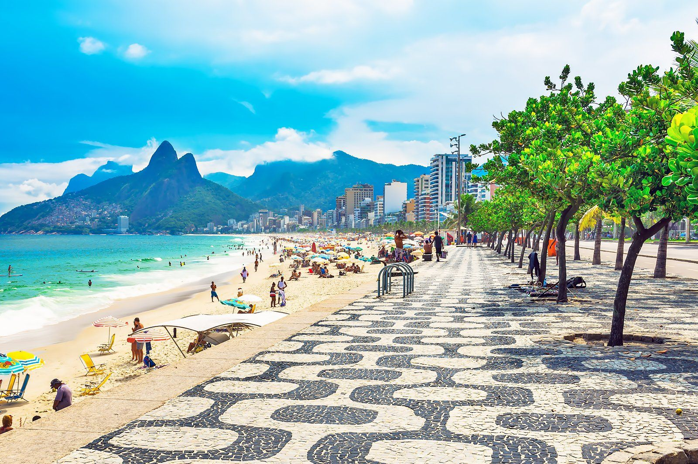

Leblon, Ipanema y alrededores — restaurantes, bares, cafés y paseos probados y aprobados, con dirección, horario y enlace directo.
ACTUALIZADO EL 03 JUL 2026 · ZONA SUR, RÍO DE JANEIRO
Nada encontrado — tenta outro termo.